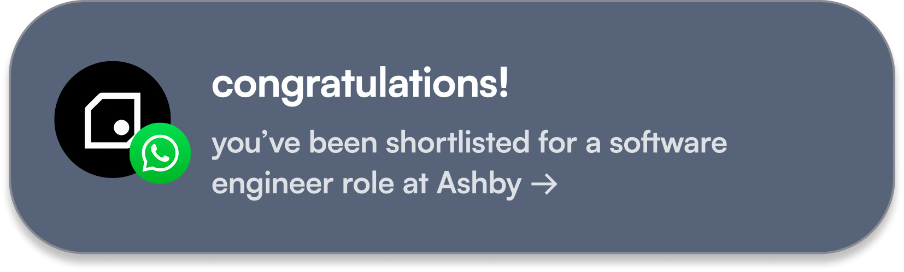

never get ghosted
no CVs. no cover letters. no repeating yourself 140 times. apply from your phone. a guaranteed answer in 7 days on every role through us.
get seen





verify once. apply anywhere.
pick the track you're going for. software, marketing, design, hardware, ops. the work you actually want to do. a 60 second video pitch. a 3 minute walkthrough of the best thing you've made or done, with the real files behind it. a product you built, a campaign you ran, a process you fixed. 2 hours, once. that's it.


we check your work against your claims. a human reviews it, and scores you on 5 things a CV can't show: communication, initiative, problem solving, strategic thinking, persistence. then everyone takes the same short platform test, so you're judged on what you can do, not where you studied. meet the bar and you're in the pool founders hire from. nothing gets auto rejected by a bot.
can't show your work publicly? redact it, or share it with access you control.
want stronger matches on another track? earn its stamp. every extra stamp sharpens your matches.


and the tracker's 6,000+ external jobs? open to everyone, stamp or not, live today. you apply to those direct, so the 7 day answer covers every role through us.


why we're doing this.
it's never been harder to be young and looking for work in the UK. over 1 million young people are out of work or education. entry level roles have dropped by nearly a third since ChatGPT launched. 70 people now fight for every graduate job. and more than half of candidates get ghosted.
but while the old path narrows, a new one is growing. the UK is starting record numbers of startups, and that's where the roles are being created. real responsibility early, real skills, real rooms.
we think what you can do should matter more than where you went or who you know.
that's why we're here: to help 1 million young people into meaningful opportunities by 2030.


every offer made through the platform works towards that goal. so does every room uncooked labs opens.
the full story, from our founder →
what our early users are saying.

didn't get the role. but I heard back in 5 days with an actual reason. first time that's ever happened. I'll be using it again.

got the role. verified once, applied from my phone, had a call booked within the week.

took me one evening to get verified. no CV, no cover letter, no rewriting my story 10 times.
questions you probably have

what does the 7 day answer actually mean?
apply to any role through us and the startup replies within 7 days. a real human, a real decision, and a reason if it's a no. that's the rule every startup signs up to. the tracker's 6,000+ external jobs work differently: you apply to those direct on the company's own site, so the 7 days doesn't cover them.
what happens after I apply?
you'll see your application is under review. founders see everyone who applies, and we shortlist the strongest fits for them. shortlisted or not, you'll hear back within 7 days from an actual human at the startup. and once you're in the pool, you don't always have to apply: if you're a strong fit for a role, we'll flag you to the founder anyway.
who else is using it?
students and grads from across the UK, Europe and North America, from 55+ universities. some from Oxford and Imperial, plenty from everywhere else. we don't filter by university. if you can show what you can do, you're in.
is it free?
yes. free for candidates, always. startups pay to hire. you never pay to apply.
do I need a CV or experience?
no CV. your passport replaces it: a 60 second video pitch and a walkthrough of the best thing you've made or done. a uni project, a side project, a hackathon build, a campaign you ran, a society you grew. if you did it and can explain it, it counts. it takes 2 hours, once, and you can redo it whenever you want to improve.
what if I don't meet the bar yet?
you'll see exactly where to improve. redo it whenever you're ready. in the meantime, the tracker's 6,000+ roles stay open to you, and we'll point you to smaller startups and student startups where you can build more proof. platform roles open up once you meet the bar.
what kind of roles and startups?
early stage, VC backed startups, mostly on project based roles across software, marketing, design, hardware and ops. early career to mid career, including experienced startup operators. year five responsibility in year one.
what if I don't get matched straight away?
roles come to you as they open, and we ping your phone when one fits. in the meantime the tracker is live with 6,000+ roles you can apply to today.
what happens to my video and my work?
founders see it when you apply to their role. nobody else. we never sell it, share it, or train anything on it. private work can be redacted, or shared with access you control. delete it whenever you want.